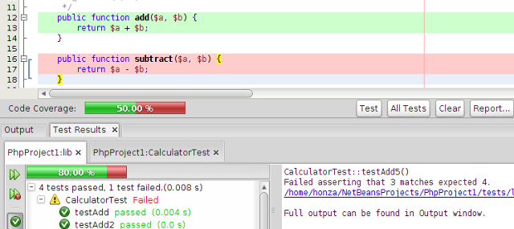

When you are testing your application, the IDE provides tools for using PHPUnit, generates report of code coverage and more.
Create PHPUnit tests and Selenium test cases for
files or folders, run tests, and view test results. You can define test groups to selectively run unit test upon. In the PHPUnit properties
you can define a custom XML configuration file, a bootstrap file for command line options, or a custom test suite, or project-specific
PHPUnit script. You can let the IDE generate skeleton code for you using
PHPUnit Skeleton Generator. Use a keyboard shortcut
to navigate quickly between test and tested class.
Testing with PHPUnit and Selenium

Generate a Code Coverage report for PHP files to see how well your test cases cover your code: Covered statements are marked green in the editor, statements that haven't been executed during the test are marked red. The evaluation is based on the number of executable statements, lines with white space and comments do not distort the result.

NetBeans IDE supports continuous integration. Continuous integration is a software development practice involving version control and a specialized server. The specialized server runs scheduled PHPUnit and Code Coverage tests on the software. Test results are associated with version control information, so developers can identify bugs they introduce to the software quickly and easily. NetBeans uses Template for Jenkins Jobs for PHP Projects, which must be set up with the necessary plugins and tools on the integration server.